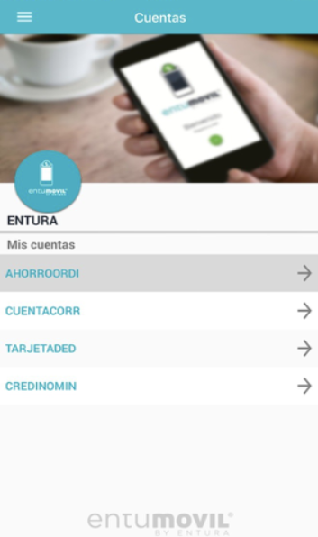

Mobile
SwiftSwiftUIUIKitObjective-CKotlinAndroid SDKFlutterDart
MOBILE DEVELOPER
Desarrollador móvil con sede en Querétaro, México, con experiencia en la creación y el mantenimiento de aplicaciones para iOS, Android y plataformas cruzadas en los sectores bancario, de seguros y de productos digitales.
struct Developer {
focus: ["iOS",
"Android",
"Flutter"]
arquitectura: [
"MVVM",
"Clean Architecture"
]
principles: [
"Clean Code",
"Testing",
"Problem Solving"
]
}01 — ABOUT
Mobile Developer con más de 7 años de experiencia en el desarrollo de aplicaciones móviles para iOS, Android y Multiplataforma. Especializado en Swift, Kotlin y Flutter, con experiencia en el diseño de aplicaciones escalables bajo arquitecturas MVC, MVVM y Clean Architecture, integración de SDKs, consumo de APIs REST, publicación en App Store y Google Play Store, desarrollo de pruebas automatizadas (XCTest, Unit Tests y UI Tests), y trabajo bajo metodologías ágiles como Scrum.
02 — TECH STACK
03 — PROYECTOS DESTACADOS
Desarrollo de aplicaciones bancarias utilizando Swift y Kotlin para Santander.
Desarrollo y publicació n de aplicació n en Flutter para Seguros Monterrey.
• Desarrollo de nuevos módulos para la aplicación móvil. • Migración de componentes Objective-C a Swift. • Integración de Firebase Analytics y OpenTelemetry. • Desarrollo de Unit Tests y UI Tests. • Publicación continua en App Store y Play Store.
Aplicación de banca móvil que permite realizar consultas, transferencias y pagos de servicios financieros.

Aplicación móvil para un salón de manicura, centrada en la programación de citas.
Aplicación para la gestión de inventario de vehículos, detalles de los vehículos y comunicación con socios.
Sistema web para el envío de transferencias SPEI, desarrollado como parte de las soluciones financieras de Entura.
Sistema de banca web que permite realizar consultas de cuentas, transferencias y pagos.
04 — LEGACY MODERNIZATION
Una de las historias técnicas más sólidas centradas en iOS que he vivido: la migración progresiva de componentes existentes en producción manteniendo la estabilidad de la aplicación.
Comprender el código y las dependencias existentes.
Migra componentes a Swift de forma progresiva.
Valida el comportamiento con pruebas automatizadas.
Mantener la estabilidad de la producción.
05 — ARCHITECTURE
La separación de responsabilidades, la testabilidad y la mantenibilidad son los objetivos principales.
06 — Experiencia
07 — EDUCATION
Instituto Tecnológico de Veracruz · Titulado
08 — PROFESSIONAL SKILLS
09 — CONTACT
Abierto a oportunidades como desarrollador móvil en México y a puestos en remoto.